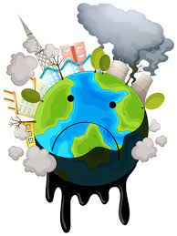

CAUSAS DE LA CONTAMINACION
La Deforestación o tala indiscriminada de árboles es una de las principales causas de la contaminación ambiental. Esta actividad ha reducido en porcentajes importantes los bosques y selvas de la Tierra, incluso, ya se cuenta la extinción de varios de estos espacios naturales.
Los árboles y las plantas tienen la función de purificar el aire. Sin ellos, la contaminación del aire se intensifica, y por ende, la aparición de enfermedades respiratorias. Además, sus raíces protegen los suelos del impacto directo de la lluvia, evitan su erosión y reducen la posibilidad de que se formen inundaciones.
-
Los pesticidias y los quimicos: Los productos que se usan en la agricultura y en la industria convencional liberan enormes cantidades de gases de efecto invernadero, que son causantes directos del deterioro de la capa de ozono, debido a su capacidad de permanecer en el agua y el suelo durante años. Pero también resalta que pueden resultar tóxicos para el ser humano.
-
La deforestacion: Ante este panorama, los efectos de los gases que se encuentran en el aire son más notorios y pueden causar graves enfermedades para las especies terrestres.
indicaba recientemente que existe una estrecha relación entre la deforestación y la alimentación, ya que, por ejemplo, se están extendiendo los monocultivos de soja (más de un 70% de la producción mundial de soja se destina a pienso para la ganadería).
3. Los desechos industriales
El consumo masivo promueve procesos industriales en cadena que pasan por alto la protección del medio ambiente. Los desechos que se generan tras estos procesos son una de las principales causas de la contaminación.
son los residuos producidos por la actividad industrial que incluye cualquier material que se inutiliza durante un proceso de fabricación, como el de las fabricas, molinos y operaciones mineras. Los tipos de desechos industriales incluyen tierra y grava, mampostería y concreto, chatarra, aceite, solventes, productos químicos, desechos de madera e incluso materia vegetal de restaurantes. Los residuos industriales pueden ser sólidos, semisólidos o líquidos.
.jpg)
4. Los combustibles fosiles
son una fuente de energía que procede de la descomposición de materia orgánica de animales, plantas y microorganismos, y cuyo proceso de transformación tarda millones de años.es aquel que ha sido formado a partir de biomasa transformada por el paso del tiempo. Ejemplos de este tipo de combustible son el carbón, el petróleo y el gas natural, todos ellos responsables de una buena parte de las emisiones de dióxido de carbono.se queman, liberan dióxido de carbono y otros gases de efecto invernadero que, a su vez, atrapan el calor en nuestra atmósfera, lo que los convierte en los principales responsables del calentamiento global y del cambio climático.
.jpg)
5. crecimiento demografico
es la principal fuerza conductora del cambio ambiental global, pues constituye una presión para ocupar cada vez más espacios, explotar más recursos, producir más alimentos, consumir más agua, contaminar más, utilizar más energía y emitir más gases de efecto invernadero. es el proceso demográfico que ha merecido mayor atención en la problemática poblacional del ambiente, campo donde muchos trabajos se han centrado en los “efectos” de la dinámica ambiental (expresados como causas, elementos explicativos o factores expulsores) sobre los procesos migratorios, particularmente la emigración .Como resultado del consumo o transformación de bienes y servicios, las ciudades generan copiosas cantidades de residuos sólidos y líquidos, además de contaminantes de la atmósfera, que afectan ecosistemas locales y distantes.
